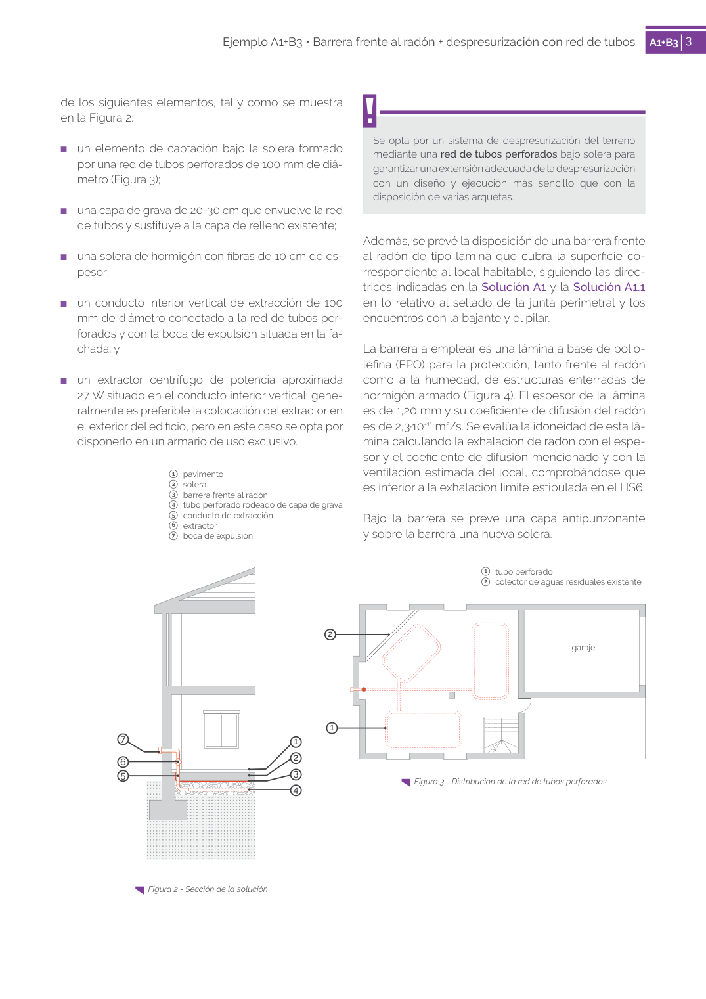
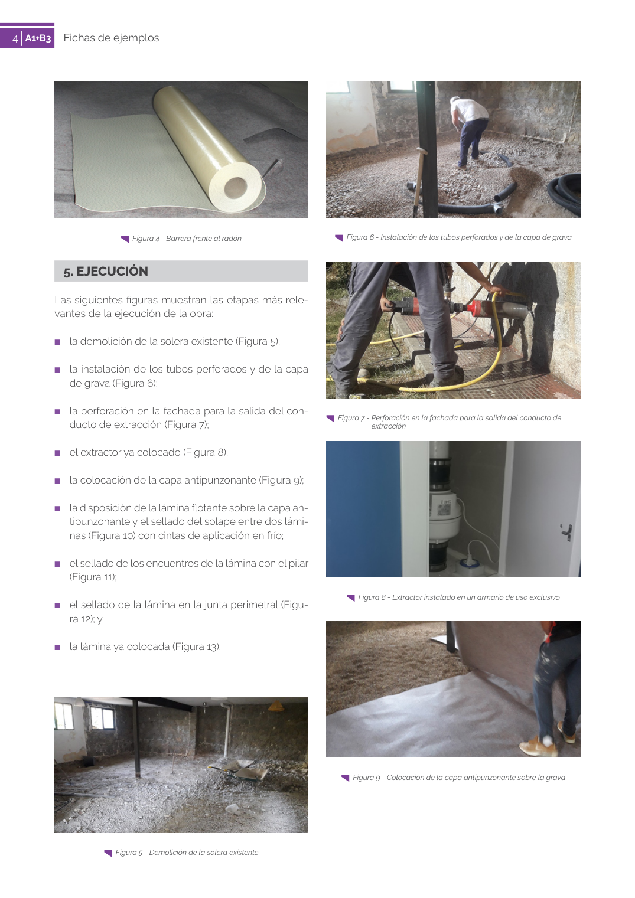

GUIA · 7 boca de expulsión · versión 2019 · capa guia
Formatos: JSON compacto · Markdown · PDF fuente
Ámbito del documento · texto del ámbito · documento y tablas
Tipo: tablas, figuras · nivel 1 · sección estimada: 7 boca de expulsión · padre:
7 boca de expulsión Figura 2 - Sección de la solución 3 2 4 1 5 6 7 4 Fichas de ejemplos A1+B3 4 Figura 4 - Barrera frente al radón


PDF fuente redistribuible: copia fiel enlazada en esta página (SHA256 verificado).